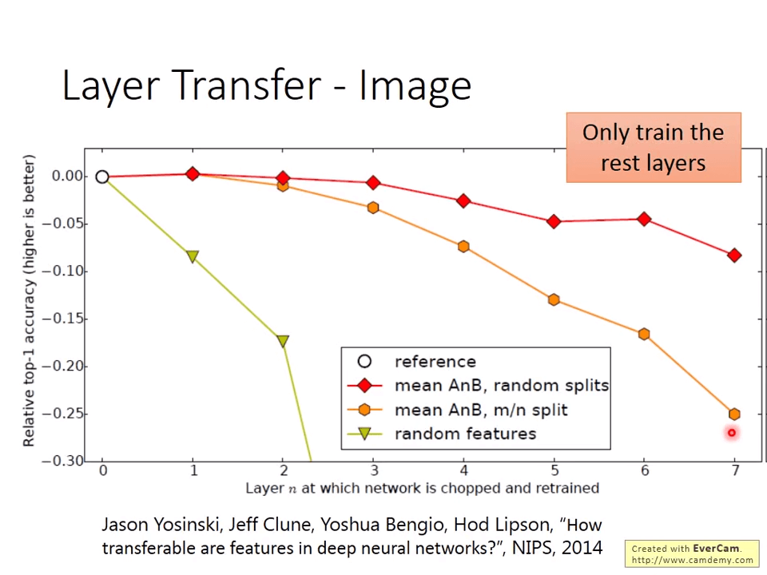
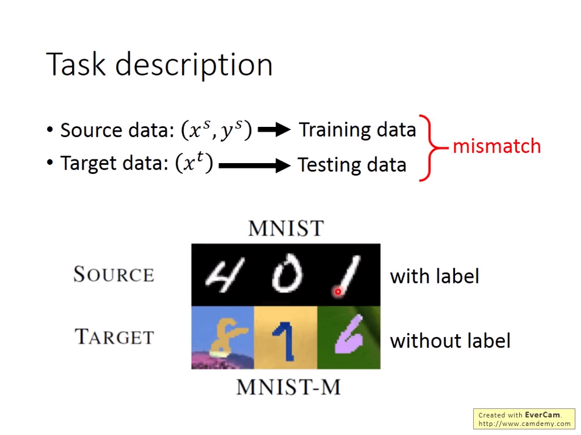
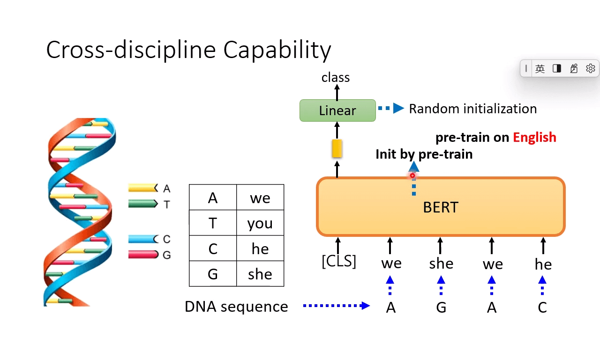

Preparation
【機器學習 2021】概述領域自適應 (Domain Adaptation)
Domain shift: 训练集和测试集的分布不同，解决方法：Domain adaptation
迁移学习：ML Lecture 19: Transfer Learning - YouTube
Domain Shift 分为三种情况：
- Training Data 和 Testing Data 分布不同，我们将 Training Data 所在域称为 Source Domain，Testing Data 所在域称为 Target Domain（本节课只考虑这个情形）。
- Training Data 和 Testing Data 标签分布不同。
- Training Data 和 Testing Data 标签不同。
Domain Adaption
如果我们对 target domain 有一定认识：Little but labeled（数量少但正确标注）
-
ldea: training a model by source data then fine-tune the model by target data
从 source data 里预训练，再在 target data 上 fine-tune
-
Challenge: only limited target data, so becareful about overfitting
由于 target data 数量小，小心过拟合的问题
Domain Adaption 的 Basic Idea：设计一个 Feature Extractor 提取 Source Domain 和 Target Domain 的特征，使提取出的特征具有相同分布。
将网络分成两个部分：Feature Extactor 和 Label Predictor。
利用类似 GAN 的思路，设计一个 Domain Classifier 对 Feature Extractor 提取出的特征作二分类，目标 。判断提取出的特征属于 Source Domain 还是 Target Domain。
Label Predictor 依旧做类别预测。
Feature Extractor 既要骗过 Domain Classifier，又要提取出有价值的特征。
最早有关 Domain Adversarial Training 的研究：[1409.7495] Unsupervised Domain Adaptation by Backpropagation (arxiv.org)
假设我们当前样本的类别有两类，那么对于有标签的训练集我们可以明显地划分为两类，那么对于没有标签的测试，我们希望它的分布能够和训练集的分布越接近越好，如右图所示。
那么在这个思路上进行拓展的话，对于我们刚才手写识别的例子，我们输入一张图片得到的是一个向量，其中含有属于每一个分类的概率，那我们希望的是这个测试集的样本离分界线越远越好，那就代表它得到的输出向量要更加集中于某一类的概率，不能够各个分类的可能性都差不多。
- [1802.08735] A DIRT-T Approach to Unsupervised Domain Adaptation (arxiv.org)
- [1712.02560] Maximum Classifier Discrepancy for Unsupervised Domain Adaptation (arxiv.org)
对于 Knowledge of target domain：
- Little but labeled
- pre-train 再 fine-tune
- Large amount of unlabeled data
- Domian Adversarial Training
- little & unlabeled
- 什么也不知道
- Domain Generalization
关于 Domain Generalization 的研究：
Training 域大，Testing 域小：Domain Generalization with Adversarial Feature Learning | IEEE Conference Publication | IEEE Xplore
Training 域小，Testing 域大：[1409.7495] Unsupervised Domain Adaptation by Backpropagation (arxiv.org)
ML Lecture 19-Transfer Learning
关于迁移学习 Transfer Learning，分为两种情况：
- Similar domain, different tasks 相似域，不同任务
- Different domains, same task 不同域，相同任务
迁移学习的应用：Speech Recognition、Image Recognition、Text Analysis
类比于研究生与漫画家：
- 研究生 → 漫画家
- 导师 → 责编
- 跑实验 → 画分镜
- 投稿期刊 → 投稿 jump
对于 Transfer Learning，根据 Source Data (not directly related to the task) 和 Target Data 的情况，共有如下策略：
| Target Data / Source Data | labelled | unlabeled |
|---|---|---|
| labelled | Fine-tuning 微调 Multitask Learning 多任务学习 |
Self-taught learning 自学习 icml07-selftaughtlearning.pdf (stanford.edu) |
| unlabeled | Domain-adversarial training 域对抗训练 Zero-shot learning 零次学习 |
Self-taught Clustering 自学聚类算法 icml.dvi (machinelearning.org) |
Model Fine-tuning
-
Task description
- Target data: , 数量少
- Source data: , 数量多
-
Example: (supervised) speaker adaption
示例：（监督）speaker 自适应
-
Target data: audio data and its transcriptions of specificuser
目标数据：特定用户的音频数据及其转录
-
Source data: audio data and transcriptions from many speakers
来源数据：来自许多 speaker 的音频数据和转录
-
-
ldea: training a model by source data, then fine-tune the model by target data
ldea：根据源数据训练模型，然后根据目标数据微调模型
-
Challenge: only limited target data, so be careful about overfitting
挑战：只有有限的目标数据，所以要小心过度拟合
-
Conservative Training：
- 我们先通过 Source data 去 train 一个 model
- 然后通过并不是直接把这个 model 当做 pre-trained 的 model，去用少量的 target data 去训练一个新的 model
- 而是加入一些正则化项，来保证新的 model 和旧的 model 在 input 相同的情况下，得到的 output 尽可能的相近。
- 为什么要这样做呢？其实原因很简单，如果我们在 train 新的 model 的过程中，并不去加这个正则项（也叫限制项），那么如果我们将 source data 送进新的 model，我们会发现整个 model 彻底坏掉了，他已经不具备原先 model 对于 source data 的表现能力了，这也是在 ML 中经常出现的一个非常重要的问题：灾难性遗忘问题
Layer Transfer
- 首先还是和 Conservative Training 一样，通过 Source data 去 train 一个 model
- 然后将该 model 中某些层的 parameters 直接复制进去新的 model 中
- 对于新 model 中那些没有得到 parameters 的 layer，我们固定其他层的参数，通过 Source data 对那些没有被 transfer 到 parameter 的 layer 进行训练
- 最后，如果 target data 的数据量比较充足，那么我们就可以在对整个网络进行 fine-tuning 一下，可以进一步提升模型的性能。
-
对于 Speech 任务，通常 copy 最后几层
-
对于 Image 任务，通常 copy 头几层
关于 Layer Transfer 的研究：

Multitask Learning
- 再来回顾下 fine-tuning 的过程，在做 fine-tuning 的时候，我们更加关注的是 model 在 target domain 上做的好不好，至于在 source domain 上做的到底怎么样，哪怕是将 source data 输入进这个新的 model 中，model 都坏掉了，也不要紧。只要这个新的 model 在 target domain 上做的很出色就够了。
- 而 multitask learning 和 fine-tuning 的过程就不同了，multitask 是说，不仅要求我们的最终 model 在 target domain 上表现的相当出色，而且在 source domain 上同样也要表现的相当出色。
Multitask Learning 在多语言机器翻译上的研究：Multi-Task Learning for Multiple Language Translation (aclanthology.org)

Progressive Neural Networks
- 这篇网络中的方法还是比较新的，首先对于 task 1 来说，我们 train 出一个 model
- 然后将 task 1 中的第 i 层的输出直接输入进 task 2 中的第 i 层的输出，作为第 i + 1 层的输入。
- 然后后面如果有 k 个网络，就会应用到前 k-1 个网络的信息。

对于 Source data 和 Target data 处于不同域：mismatch 时
Domain-adversarial training: 设计一个 Domain classifier，迫使 feature extractor 提取出相同分布的特征。
Domain-adversarial training
- 第一部分绿色的 feature extractor 其实要做的就是提取出 source data 和 target data 的 feature，然后使得最后在做 classification 的时候，通过这些提取出来的 feature，能够得到一个非常好的精确度。他还有尽可能让这些 mismatch 的 data 混在一起，以至于 domain classifier 不能够正确的判断他们是否混在一起。
- 第二部分蓝色的 label predictor 做的是，能够尽可能大的输出 classification 的精度
- 第三部分红色的 domain classifier 做的是，能够尽可能的将从 feature extractor 中提取出来的 feature 进行分开，将其各自归属到其所属的 domain 里。
当然，关于这个网络的 train，讲起来很容易，实际操作起来，肯定会像 GAN 一样，涉及到很多的 trick。
-
[1409.7495] Unsupervised Domain Adaptation by Backpropagation (arxiv.org)
-
[1505.07818] Domain-Adversarial Training of Neural Networks (arxiv.org)
Zero-shot Learning: Source data 和 Target data 是不同的 tasks.
在 NLP 领域中比较常见，可以用 word embedding
有关 Zero-shot Learning 的实验：[1312.5650v3] Zero-Shot Learning by Convex Combination of Semantic Embeddings (arxiv.org)
Self-taught learning 自学习
- Learning to extract better representation from the source data (unsupervised approach) 学习从源数据中提取更好的表示（无监督方法）
- Extracting better representation for target data 为目标数据提取更好的表示
【機器學習 2022】惡搞自督導式學習模型 BERT 的三個故事
How versatile are self-supervised models?
自监督模型的通用性如何？
- Cross-lingual 跨语言
- Cross-discipline 跨学科
- Pre-training with artificial data 使用人工数据进行预训练
Cross-lingual

Cross-discipline
用 BERT 做 DNA 分类。

Pre-training with artificial data 使用人造数据进行预训练 BERT
hw11_domain_adaptation
场景和为什么 Domain Adversarial Training
现在，我们有了已标记的源数据和未标记的目标数据，其中源数据可能与目标数据相关。现在，我们希望仅使用源数据训练模型，并在目标数据上对其进行测试。
如果我们这样做，可能会出现什么问题？在学习了异常检测之后，我们现在知道，如果我们使用从未出现在源数据中的异常数据来测试模型，我们训练的模型很可能会导致性能不佳，因为它不熟悉异常数据。
例如，我们有一个包含 Feature Extractor 和 Classifier 的模型：
当使用源数据训练模型时，特征提取器 将提取有意义的特征，因为它熟悉它的分布。从下图中可以看出，蓝点（即源数据的分布）已经聚集到不同的集群中。因此，Classifier 可以根据这些集群预测标签。
但是，在对目标数据进行测试时，Feature Extractor 将无法提取遵循源特征分布的有意义的特征，这会导致为源域学习的分类器无法应用于目标域。
Nerural 网络的域对抗训练 （DaNN）
基于上述问题，DaNN 方法在源（训练时）和目标（测试时）域之间构建映射，以便为源域学习的分类器在与域之间学习的映射组合时也可以应用于目标域。
在 DaNN 中，作者添加了一个域分类器，这是训练框架中一个深度判别训练的分类器，用于通过特征提取器提取的特征来区分来自不同领域的数据。随着训练的进行，该方法促进了区分源域和目标域的域分类器，以及可以提取对源域上的主要学习任务具有歧视性且对域之间的转换不加区分的特征提取器。
特征提取器的性能可能优于域分类器，因为它的输入是由特征提取器生成的，并且域分类和标签分类的任务并不冲突。
这种方法导致了域不变且位于相同特征分布上的特征的出现。
数据介绍
我们的任务包含源数据：真实照片和目标数据：手绘涂鸦。
我们将使用照片和标签训练模型，并尝试预测手绘涂鸦的标签是什么。
数据可以在这里下载。下面的代码用于数据下载和可视化。
注意：源数据和目标数据都是平衡数据，您可以使用此信息。
1 | |
1 | |
1 | |

1 | |

特殊领域知识
我们在涂鸦时，通常只画轮廓，因此我们可以对源数据进行边缘检测处理，使其与目标数据更加相似。
Canny 边缘检测
Canny Edge Detection 的实现如下。 此处不会详细描述该算法。如果您有兴趣，请参考 wiki 或这里。
我们只需要两个参数即可使用 CV2 实现 Canny Edge Detection：low_threshold 和 high_threshold。
1 | |
简单地说，当边值超过 high_threshold 时，我们将其确定为边。如果边值仅高于 low_threshold，我们将确定它是否为边。
让我们在源数据上实现它。
1 | |
数据处理
数据适用于 。您可以使用 创建数据集。图像增广的详细信息请参考以下代码中的注释。torchvision.ImageFolder torchvision.ImageFolder
1 | |
模型
Feature Extractor：经典 VGG 式架构
标签预测器/域分类器：线性模型。
1 | |
预处理
在这里，我们使用 Adam 作为我们的优化器。
1 | |
开始训练
DaNN 实施
在原始论文中，使用了 Gradient Reversal Layer。 Feature Extractor、Label Predictor 和 Domain Classifier 都同时进行训练。在这段代码中，我们首先训练 Domain Classifier，然后训练我们的 Feature Extractor（与 GAN 中的 Generator 和 Discriminator 训练过程的概念相同）。
提醒
- 控制域对抗性损失的 Lambda 在原始论文中是自适应的。您可以参考原著。此处 lambda 设置为 0.1。
- 我们没有用于目标数据的标签，您只能通过将结果上传到 kaggle 来评估您的模型:)
1 | |
1 | |
绘制图表：
1 | |
推理
我们使用 pandas 生成 csv 文件。
顺便说一句，训练 200 个 epoch 的模型的性能可能不稳定。您可以训练更多 epoch 以获得更稳定的性能。
1 | |
可视化
我们使用 t-SNE 图来观察提取特征的分布。
1 | |